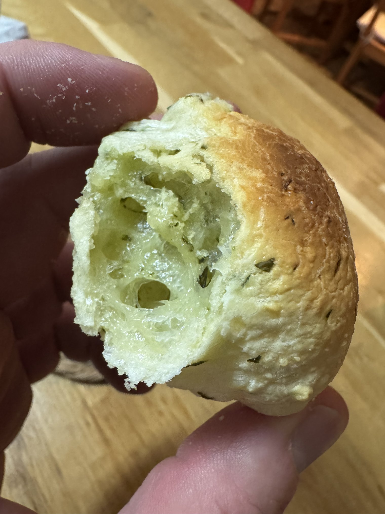

Panecillos de queso con hierbas
Ingredients
12×
- 125 ml de leche
- 60 ml de aceite
- pizca de sal
- 250 g de almidón de mandioca (tapioca)
- 1 huevo
- 100 g de queso rallado
- hierbas frescas picadas (perejil, orégano)

Preparación
Paso 1
Calentar 125 ml de leche con 60 ml de aceite y una pizca de sal hasta que hierva, y verter sobre 250 g de almidón de mandioca (tapioca). Mezclar.
Paso 2
Cuando esté tibia, añadir 1 huevo, 100 g de queso rallado y hierbas frescas picadas (perejil, orégano), y amasar.
Paso 3
Formar bolitas y hornear 25min a 180ºC, hasta que estén doradas.